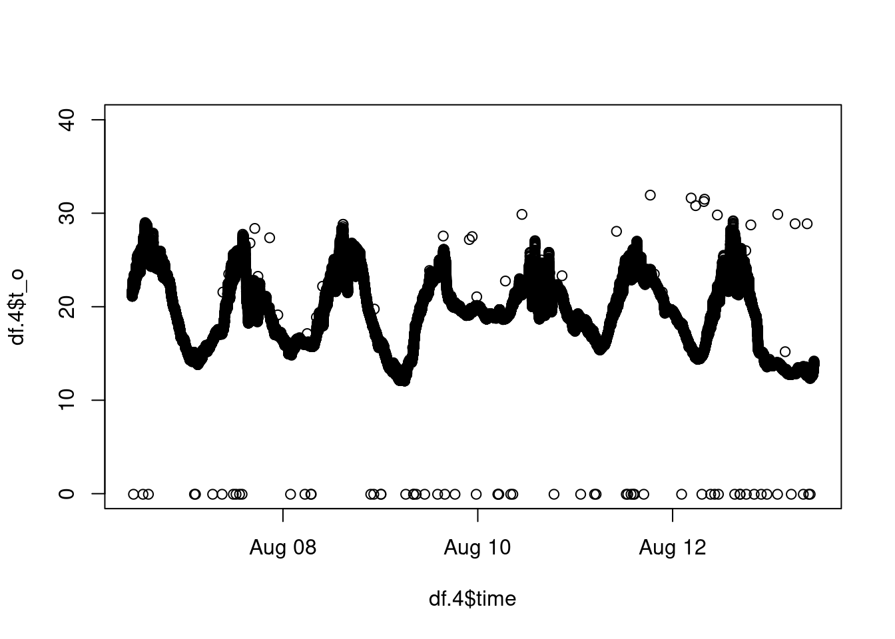

5 Preparing your data for analysis
5.1 Reading the data
Usually, you would use the “csv” format to read data into R. Sometimes you have other formats, e.g. “txt”. Optimally, you have exactly one line for the header. Make sure to choose the correct separator. You also have to tell R whether your file has a header or not.
## Error in scan(file = file, what = what, sep = sep, quote = quote, dec = dec, : line 2 did not have 2 elementsThat did not work. Oh, yes, the separator!
| V1 | V2 | V3 | V4 | V5 | V6 | V7 | V8 | V9 | V10 |
|---|---|---|---|---|---|---|---|---|---|
| time | hive | h | t_i_1 | t_i_2 | t_i_3 | t_i_4 | t_i_5 | t_o | weight_kg |
| 1.565081418e+18 | 4 | NA | 27.25 | 26.375 | 23.4375 | 23.5 | 23.25 | 21.625 | NA |
| 1.565081428e+18 | 4 | NA | 27.25 | 26.4375 | 23.5 | 23.5 | 23.25 | 21.625 | NA |
| 1.565081431e+18 | 13 | 59.0554 | 22.875 | 22.1875 | 23 | 21.8125 | 22.6875 | 22.875 | 10.779 |
| 1.565081438e+18 | 4 | NA | 27.25 | 26.375 | 23.5 | 23.5625 | 23.25 | 21.625 | NA |
Looks ok, but we forgot the heading:
| time | hive | h | t_i_1 | t_i_2 | t_i_3 | t_i_4 | t_i_5 | t_o | weight_kg |
|---|---|---|---|---|---|---|---|---|---|
| 1.565081e+18 | 4 | NA | 27.250 | 26.3750 | 23.4375 | 23.5000 | 23.2500 | 21.625 | NA |
| 1.565081e+18 | 4 | NA | 27.250 | 26.4375 | 23.5000 | 23.5000 | 23.2500 | 21.625 | NA |
| 1.565081e+18 | 13 | 59.0554 | 22.875 | 22.1875 | 23.0000 | 21.8125 | 22.6875 | 22.875 | 10.779 |
| 1.565081e+18 | 4 | NA | 27.250 | 26.3750 | 23.5000 | 23.5625 | 23.2500 | 21.625 | NA |
| 1.565081e+18 | 4 | NA | 27.250 | 26.3750 | 23.5000 | 23.5625 | 23.2500 | 21.625 | NA |
That looks good!
Alternatively, we can use “read.csv”. In this case, the default parameters work for us.
Take care, sometimes you don’t get an error, but your data is screwed up anyway:

| name. | age. | subject. | year |
|---|---|---|---|
| Li; | 18; | chemistry; | 1 |
| Svenson,Jacob; | 25; | psychology; | 12 |
| Raphaela; | 23; | psychology; | 1 |
Use the head function to inspect your data.
5.2 Transforming entire columns
The columns/ variables of a dataframe basically behave like entries in a named list. Each element of this list is a vector of a specific type. You can inspect the structure of a dataframe using the function “str”.
## 'data.frame': 171299 obs. of 10 variables:
## $ time : num 1.57e+18 1.57e+18 1.57e+18 1.57e+18 1.57e+18 ...
## $ hive : int 4 4 13 4 4 4 4 4 4 4 ...
## $ h : num NA NA 59.1 NA NA ...
## $ t_i_1 : num 27.2 27.2 22.9 27.2 27.2 ...
## $ t_i_2 : num 26.4 26.4 22.2 26.4 26.4 ...
## $ t_i_3 : num 23.4 23.5 23 23.5 23.5 ...
## $ t_i_4 : num 23.5 23.5 21.8 23.6 23.6 ...
## $ t_i_5 : num 23.2 23.2 22.7 23.2 23.2 ...
## $ t_o : num 21.6 21.6 22.9 21.6 21.6 ...
## $ weight_kg: num NA NA 10.8 NA NA ...E.g. converting kg to g:
Marking high temperature values:
| time | hive | h | t_i_1 | weight_kg | weight_g | highTemp |
|---|---|---|---|---|---|---|
| 1.565081e+18 | 4 | NA | 27.250 | NA | NA | TRUE |
| 1.565081e+18 | 4 | NA | 27.250 | NA | NA | TRUE |
| 1.565081e+18 | 13 | 59.0554 | 22.875 | 10.779 | 10779 | FALSE |
| 1.565081e+18 | 4 | NA | 27.250 | NA | NA | TRUE |
| 1.565081e+18 | 4 | NA | 27.250 | NA | NA | TRUE |
Dealing with the timestamp (nanoseconds to seconds)
| time | hive | h | t_i_1 | t_i_2 | t_i_3 | t_i_4 | t_i_5 | t_o | weight_kg | weight_g | highTemp |
|---|---|---|---|---|---|---|---|---|---|---|---|
| 2019-08-06 10:50:18 | 4 | NA | 27.250 | 26.3750 | 23.4375 | 23.5000 | 23.2500 | 21.625 | NA | NA | TRUE |
| 2019-08-06 10:50:28 | 4 | NA | 27.250 | 26.4375 | 23.5000 | 23.5000 | 23.2500 | 21.625 | NA | NA | TRUE |
| 2019-08-06 10:50:31 | 13 | 59.0554 | 22.875 | 22.1875 | 23.0000 | 21.8125 | 22.6875 | 22.875 | 10.779 | 10779 | FALSE |
| 2019-08-06 10:50:38 | 4 | NA | 27.250 | 26.3750 | 23.5000 | 23.5625 | 23.2500 | 21.625 | NA | NA | TRUE |
| 2019-08-06 10:50:48 | 4 | NA | 27.250 | 26.3750 | 23.5000 | 23.5625 | 23.2500 | 21.625 | NA | NA | TRUE |
5.3 Subsetting data
You can use squared brackets and boolean expressions to choose lines and columns: df[<expression to choose lines>,<expression to choose columns>]
Select and plot data from hive 4:
Select only the first 1000 lines:
 Delete columns: / Choose only some columns
## [1] "time" "hive" "h" "t_i_1" "t_i_2"
## [6] "t_i_3" "t_i_4" "t_i_5" "t_o" "weight_kg"
## [11] "weight_g" "highTemp"| time | hive | weight_kg |
|---|---|---|
| 2019-08-06 10:50:18 | 4 | NA |
| 2019-08-06 10:50:28 | 4 | NA |
| 2019-08-06 10:50:31 | 13 | 10.779 |
| 2019-08-06 10:50:38 | 4 | NA |
| 2019-08-06 10:50:48 | 4 | NA |
You can also use:
| time | hive | weight_kg |
|---|---|---|
| 2019-08-06 10:50:18 | 4 | NA |
| 2019-08-06 10:50:28 | 4 | NA |
| 2019-08-06 10:50:31 | 13 | 10.779 |
| 2019-08-06 10:50:38 | 4 | NA |
| 2019-08-06 10:50:48 | 4 | NA |
| or |
| time | hive | weight_kg | highTemp |
|---|---|---|---|
| 2019-08-06 10:50:18 | 4 | NA | TRUE |
| 2019-08-06 10:50:28 | 4 | NA | TRUE |
| 2019-08-06 10:50:31 | 13 | 10.779 | FALSE |
| 2019-08-06 10:50:38 | 4 | NA | TRUE |
| 2019-08-06 10:50:48 | 4 | NA | TRUE |
5.4 Useful functions
- summary
- head
- tail
- sum
- mean